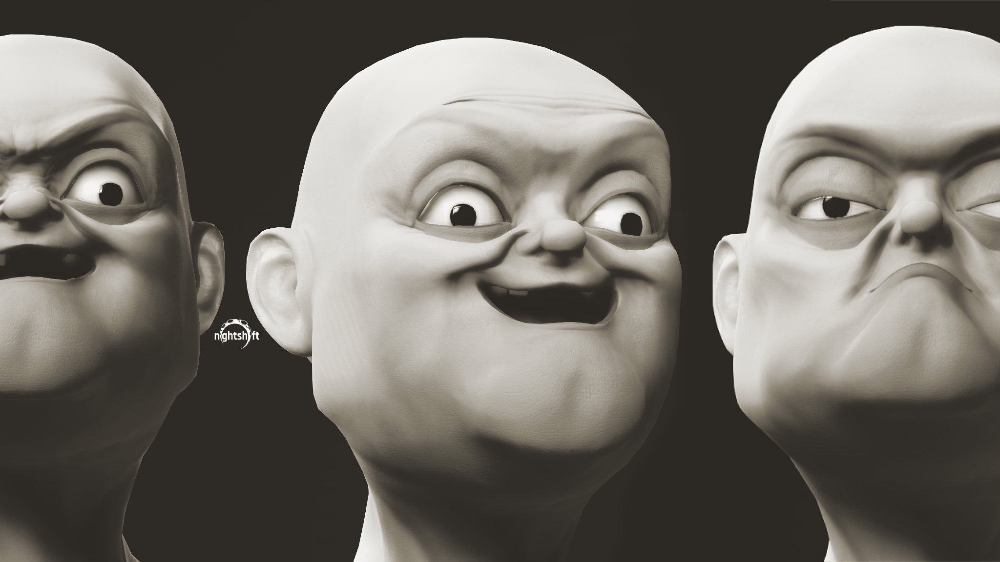
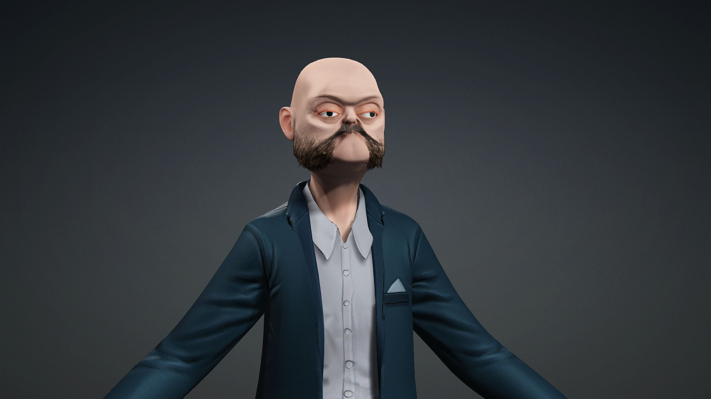
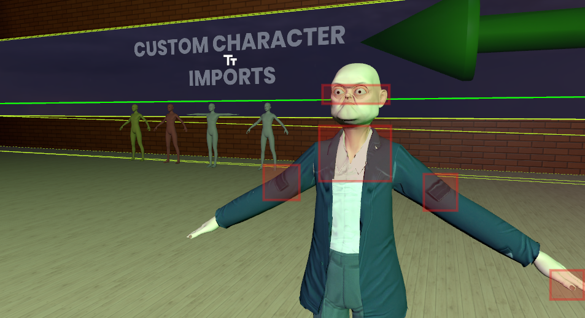

Studio note
This is a smaller but important Nightshift update.
The real headline is not that Exile got casually dusted off. The real headline is that a large amount of previously lost work was recovered.
This project had roughly a thousand hours tied up in it before it was effectively scratched. At the time, the engine was not documented well enough to make the persistence path and the pawn life cycle understandable in a reliable way, which meant too much of the project was trapped behind systems that could not be trusted or finished cleanly.
That is what makes this recovery matter.
The first goal after pulling Exile back off the shelf was not a sweeping redesign or a big reveal. The first goal was much more practical: make sure the recovered project still boots, make sure the player can actually possess a pawn again, and make sure the basic life cycle is back under control before anything more ambitious starts pretending to be real.
That part moved fast.
Within roughly 24 hours, Exile was booting again, the pawn-possession life cycle was restored, and a first public-facing subsite was also booted as a rough surface for the revived project.
That subsite is not polished yet. It is still plainly early and rough. But that is acceptable for now because the immediate goal is not presentation quality. The immediate goal is to get the project back into a state where the underlying systems can be validated honestly.
That matters because it turns the recovered work from "expensive archive material" back into an active surface that can be touched, tested, and built forward from.
For anyone who wants to see where that thread is sitting publicly right now, the current Exile Reforged subsite is live here: Exile Reforged.
Exile is also the proving ground for SPEAR
The other important part of this project is that Exile is not only being revived for its own sake. It is also effectively the testing ground for SPEAR.
That is one of the biggest strategic reasons to keep it alive.
As a live-service surface, Exile makes it possible to test the actual gameplay mechanics that would matter to a standalone game faster, cheaper, and with a much shorter path to practical feedback than trying to build the entire standalone title first. It can even reach usefulness and potential profitability sooner than a full game project, which matters when the goal is to validate real player behavior instead of only authoring design documents in isolation.
That is part of the broader value of live services in the first place: they can validate gameplay loops before those loops get locked into a full game. They let you find out whether the loop is actually compelling, whether it scales, whether it holds attention, and whether it even deserves to become a full standalone title at all.
In that sense, Exile is not just archived work being recovered. It is also a cheaper and faster proving ground for the design DNA behind SPEAR.
There is also a broader historical pattern behind that strategy:
- the mod is often the prototype,
- the live service is often the validation,
- and the standalone game is often the scale-up.
A lot of people assume innovation comes primarily from giant studios, but a surprising amount of it has historically come from communities experimenting inside someone else's sandbox first.
The pattern shows up over and over:
- Counter-Strike started as a mod for Half-Life,
- Defense of the Ancients helped lead into the MOBA genre,
- DayZ helped kick off the survival boom,
- PUBG: Battlegrounds grew out of battle royale mod work,
- Team Fortress began as a mod,
- and Garry's Mod became an entire platform.
That is an absurd amount of industry influence coming out of mods and sandbox ecosystems.
It happens for a simple reason: building a new game from scratch is expensive. Building inside an existing ecosystem lets you ask the real questions much earlier:
- is this fun,
- will people actually play it,
- and can it retain users,
without first spending:
- five years,
- five million dollars,
- or a custom engine.
That is the practical advantage. You get market validation earlier, and you get it while the concept is still flexible enough to change.
Recovering the lost work was the real win
There is a specific kind of progress that does not look glamorous in a screenshot but decides whether a shelved project is actually recoverable.
This was that kind of progress.
The immediate win was not content volume. The immediate win was getting back access to work that had already cost real time and real effort, then restoring the basic loop that lets the project behave like a game again:
- the project boots,
- the player flow can hand off into a possessed pawn again,
- and the life cycle is no longer stalled at the most fundamental control layer.
That is the right first checkpoint for any revival pass, especially when the original reason for shelving the work was not lack of interest but a hard engine/documentation wall around persistence and possession.
Before talking about systems, map shape, progression, or atmosphere, the runtime has to prove it can do the simple thing correctly. If possession is broken, and if persistence still cannot be reasoned about, everything above it is noise. Once that core path starts behaving again, the rest of the stack becomes worth reopening.
More specifically, the first real revival check is still ahead:
- persistence,
- the full respawn cycle,
- loadout recovery,
- faction handling,
- and the broader set of conditions that have to be satisfied when a player re-enters the game loop.
That is the real validation target. If those systems can be dialed in now, then the project is not just visually revived or technically booting. It is actually revived in the sense that matters.
Exile is not coming back as a museum piece
The more useful part of this restart is that it does not need to treat every older attempt as dead weight.
Some of the previous work is already proving reusable, which is exactly what should happen in a healthy studio pipeline. A shelved branch should not only preserve lessons. It should also preserve material that can be recovered, revised, and pushed into a better context later.
That is already happening here.
Older character work from previous attempts is being brought forward and repurposed, and that has direct value beyond nostalgia. It means the earlier effort is not trapped in the past version of the project. It can become source material for the current one.
Older character work is now feeding AfterDark
This is the part that matters most across projects.
Some of the previous character exploration is now being treated as usable production material for AfterDark, instead of as a discarded side road. That is a better outcome than letting older asset work sit in storage just because the original context changed.
The strongest reuse is practical reuse:
- recover the forms that still have value,
- keep the personality or shape language that still reads,
- update what needs updating,
- and fold it into the project that is actually moving.
That is a good trade.
The character work shown here also needs to be read honestly. This was made shortly after playing Schedule One, and it is still much more of an early style-and-vibe exploration than a finished production character. It needs a lot of polish.
The clothing in particular should not be read as a locked final answer. Right now it is mainly there to establish the feeling of the character and test the general silhouette. The longer-term direction is still being figured out in a more grounded way.
The current read is that Sandbox's own character style is not purely cartooned-out clothing. It feels closer to a tuned stylized fit layered over more realistic clothing and more realistic hair treatment. So the likely direction from here is to match Sandbox's style as closely as possible, instead of forcing a separate exaggerated clothing language that would fight the rest of the engine's character presentation.
That makes this work more useful as a starting point than as a final look. The face, proportions, clothing read, and overall material treatment can all be pushed closer to the Sandbox character standard while still keeping the personality that made the original experiment worth saving.



Why this is a healthy kind of update
There are two wins here, and they reinforce each other.
The first win is recovery-focused: a large body of previously lost Exile work is usable again. That is the part with the biggest weight behind it.
The second win is strategic: Exile is back in position to serve as a live proving ground for SPEAR instead of leaving those gameplay loops trapped inside a more expensive standalone-game path.
The third win is technical: Exile can boot again and possession is back. That reopens a project surface that was effectively dormant.
The fourth win is production-facing: older content is not being wasted. Character work that came out of previous attempts is now being treated as reusable material for AfterDark and for the wider Nightshift asset language.
Those are exactly the kinds of gains a small studio needs to protect:
- restore dormant work quickly,
- recover high-cost prior work instead of abandoning it twice,
- validate standalone-game mechanics in a faster and cheaper live-service environment,
- keep the runtime fundamentals honest,
- and salvage good content wherever the original branch failed to carry it forward.
That is how a broader production stack becomes more resilient over time. The goal is not to make every project line survive unchanged. The goal is to make sure useful code, useful assets, and useful experiments can keep paying off even when the surrounding plan changes.
What comes next
- Keep Exile on the practical recovery path instead of inflating the restart into a fake milestone.
- Treat the current public subsite as an early rough surface, not as proof that the project presentation is finished.
- Verify that the restored pawn-possession flow stays stable as more gameplay layers come back online.
- Dial in persistence and the full respawn cycle, including loadout, faction, and the surrounding conditions that govern re-entry into the loop.
- Use that persistence/respawn validation as the actual go-or-no-go test for whether the revival is real.
- Continue identifying older content that is strong enough to reuse instead of rebuilding everything from zero.
- Push the recovered character work through whatever cleanup is needed so it fits AfterDark's current direction cleanly.
- Keep using older branches as asset and systems reservoirs when they still contain real value.
This is not the biggest Nightshift update of the month, but it is one of the more useful ones. A shelved Exile project recovered a large amount of previously lost work, regained its core possession path, spun up a rough first public subsite quickly, and reopened as a practical proving ground for SPEAR. The next thing that decides whether the revival is truly real is not polish. It is whether persistence and the full respawn/loadout/faction cycle can now be made trustworthy.
Signed, Nightshift